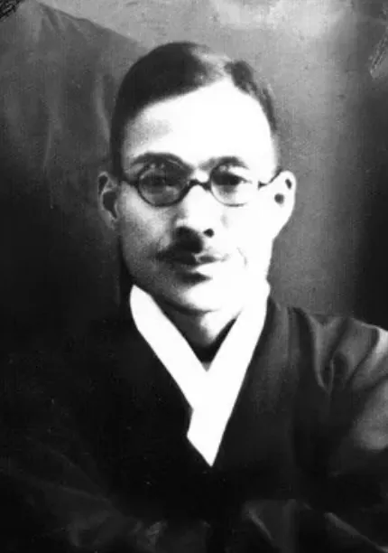
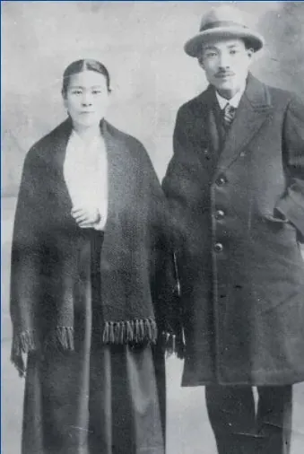
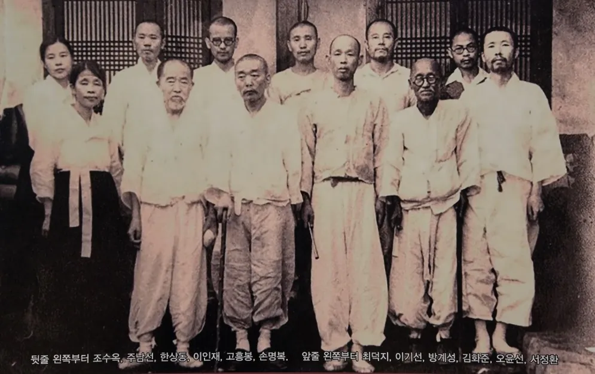

죽음과 맞바꾼 신앙, 일사각오 주기철 목사
13세 소년의 성탄절 교회 첫걸음에서 평양 경찰서 지하실까지, 신사참배를 끝내 거부한 순교자의 생애를 막내아들 주광조의 시선으로 따라가다
일제강점기 신사참배 강요에 맞서 끝까지 굽히지 않았던 주기철 목사의 생애가 막내아들 주광조의 기억을 통해 다시 조명됐다. 2015년 12월 25일 KBS가 방송한 다큐멘터리는 웅천에서 태어난 한 소년이 오산학교와 평양신학교를 거쳐 목사가 되고, 평양 산정현교회에서 신사참배 거부를 선언한 뒤 고문과 투옥 끝에 순교에 이르기까지의 과정을 따라간다. 이 이야기는 ‘일사각오’, 곧 죽음을 각오한 믿음의 유산으로 요약된다.

아들의 기억에서 시작된 이야기
이야기는 주기철 목사의 막내아들 주광조의 회상으로 시작된다. 그는 성경의 가르침대로 사는 일에는 스스로 엄격했지만 자녀에게는 한없이 다정한 아버지였다고 기억한다. 연을 날리며 “우리 광조도 저 연처럼 높이 올라서 더 멀리 보고 더 큰 꿈을 꾸어야 한다”고 말하던 아버지는, 아들이 13세가 되던 해 곁을 떠났다.
어린 아들은 떠나간 아버지를 원망했고, 아버지를 데려간 신에게 분노했다고 털어놓는다. 또 다른 아들의 증언도 이어진다. 그는 장례식 날 하늘을 향해 “하나님이 살아 계신다면 어떻게 이럴 수 있느냐”고 원망했고, 가족을 어려운 처지로 남겨 두고 죽어간 아버지를 “바보”라고 불렀다고 회고한다. 이 원망이 존경으로 바뀌기까지 60년의 세월이 걸렸다는 것이 이 이야기의 핵심 줄기다.
웅천의 소년, 오산학교의 제자
주기철은 웅천에서 태어났다. 열세 살이던 1910년, 나라가 한일병합으로 주권을 잃었고 그해 성탄절에 처음으로 교회에 나갔다. 나라를 잃은 그때 소년이 처음 찾은 교회는 과연 어떤 소망이 되었을까.
보통학교를 졸업한 그는 민족지도자 남강 이승훈이 세운 평안북도 오산학교에 진학해 스승 조만식을 만난다. 일제가 ‘내선일체’를 내세우며 청년들의 정신을 흐트러뜨리던 시기, 오산학교는 정신의 중심을 민족정신에서 찾도록 가르친 학교였다. 졸업 후 고향으로 돌아온 그는 애국 계몽운동에 힘썼고, 1919년 3·1 만세운동 때에는 웅천 지역 지도부로 활동했다. 이후 평양신학교에 입학하면서 교회와 민족에 대한 책임감을 한층 깊이 갖게 된다.
그가 목사 안수를 받은 1925년, 서울 남산에는 5년간의 공사 끝에 조선신궁이 세워졌다. 조선총독부가 일제 총칼의 상징이라면 조선신궁은 정신적 상징이었고, 이후 조선인들에게 신사참배가 강요되기 시작했다. 일제는 신궁 참배를 통해 정치적 식민지를 넘어 정신적 식민지를 구축하려 했다.
스스로에게 철저했던 목회자
주기철 목사의 첫 목회지는 부산의 한 달동네였다. 세계적인 공황과 일제의 경제 수탈로 백성들의 삶이 고단하던 때였다. 초량교회 후임 목회자의 증언에 따르면 그는 사례금을 70원에서 60원으로 깎았고, 사모가 결혼할 때 가져온 6천 평 가까운 땅도 조금씩 팔아 구제금으로 썼다.

그의 기도는 이러했다. 사람들이 모두 외면하는 나환자의 벗이 되신 주님이 그토록 낮아지셨으니, 자신은 어디까지 낮아져야 하느냐는 고백이다. 이어 마산 문창교회에서 목회하던 1936년, 그는 평양 산정현교회의 청빙을 받는다. 당시 이미 이름난 설교자였고 안정된 목회를 할 수 있었음에도, 신사참배 강요라는 민족의 시련 앞에서 기득권을 내려놓고 일제의 집중 표적이던 평양으로 옮겨 갔다는 것이 증언자의 설명이다.
평양 산정현교회, 첫 일성은 신사참배 금지
1936년 7월 가족이 평양에 도착했을 때 처음 맞은 것은 일본 경찰의 행렬이었다. 경찰은 그가 경남노회 부회장 시절부터 신사참배 반대 입장을 밝혀 온 인물이라며 경계했다. 당시 산정현교회에는 스승 조만식 장로를 비롯해 민족주의자들이 제직으로 활동하고 있었고, 주기철은 이 교회를 지키는 일을 자신의 사명으로 삼았다.
부임 후 첫 일성은 신사참배 금지였다. 그는 신사참배가 십계명의 제1계명과 제2계명을 어기는 하나님께 대한 배신이며, 이로 인한 모든 책임은 담임목사인 자신이 지겠다고 선언했다.
이후 경찰서로 불려 간 자리에서 일본 측은 신사참배가 종교의식이 아닌 국가의식일 뿐이라고 주장했다. 이에 대한 주기철의 답은 분명했다. 살아 있는 일왕에게 절하라는 것이 어떻게 국가의식이냐는 것이다. 일본에게 신사는 종교이자 정치의 영역이었기에, 참배 거부는 곧 통치 체제를 부정하는 독립운동으로 간주되었다. 다른 종교 단체들이 하나둘 신사참배를 받아들이면서 탄압의 표적은 주기철에게 집중됐다.
1938년 9월 9일, 무너진 총회
주기철의 검속이 잦아지면서 아내의 금식 기도도 늘어갔다. 어린 광조는 아버지가 고문을 견디며 지켜내려는 것이 무엇인지 알지 못했다고 회상한다.
1938년 9월 9일, 마지막까지 버티던 장로교 총회가 열렸다. 총회장은 대의원들을 감시하는 일본 경찰로 가득했고 반대 발언은 사실상 불가능했다. 신사참배 결의안은 그렇게 통과되었다. 일제는 주기철이 총회에 방해가 될 것을 우려해 미리 구속해 둔 상태였고, 그는 유치장 바닥에서 소식을 들었다. 결의가 가결된 그날 오후 장로교 임원 27명은 평양 신사를 찾아 참배했고, 일부 지도자는 일본까지 건너가 신궁에 참배했다.
칼로 베고 불로 지지는 고문이라도 한두 번에 끝난다면 견딜 수 있습니다. 그러나 한 달, 두 달, 1년, 10년 계속되는 고통은 견디기 어렵습니다. — 주기철 목사의 기도 중에서, KBS 다큐 ‘일사각오 주기철’ 방송
총회 결의 후 5개월 만에 풀려난 그는 어느 때보다 비장한 모습으로 교회에 돌아왔다. 그가 올린 기도는 장기간의 고통을 이기게 해 달라는 것, 의에 살고 의에 죽게 해 달라는 것, 그리고 마지막으로 영혼을 주님께 부탁한다는 것이었다.
파면과 교회 폐쇄, 쫓겨난 가족
일본 경찰은 예배 중에도 예배당 안에 들어와 있었다. 경찰은 주기철이 목사직에서 파면되었음을 확인해 주었고, 노회 누구도 이에 이의를 제기하지 못한 채 파면이 이뤄졌다. 아버지가 없는 교회에서 교인들은 스스로 예배를 이어 갔고, 신사참배를 거부하는 교인들은 경찰의 감시 대상이 되었다. 한 증언자는 목회자가 하나님 앞에 서고 교인들이 같은 마음으로 기도하며 힘을 모았기에 저항이 가능했다고 평가한다.
1940년 3월, 산정현교회는 강제 폐쇄됐다. 가족은 사택에서 쫓겨났고 가난과 배고픔이 이어졌다. 증언에 따르면 이사를 13번 다녔고 사례비도 없었으며, 경찰은 성도들의 접근조차 막았다. 조만식 장로 등 교회 장로들의 가족이 경찰의 눈을 피해 쌀과 감자를 담장 너머로 건네 가며 생계를 도왔고, 어머니는 그것으로 2~3일에 한 번 끼니를 이었다.

마지막 설교와 순교
한동안 풀려났던 주기철은 가족과 짧은 저녁을 보냈다. 별이 많은 밤, 그는 “우리나라에도 광복이 얼마 남지 않았을 것”이라며 아들에게 말했다. 쌀밥 한 끼로 온 가족이 행복했던 시간은 오래가지 않았고, 경찰이 다시 그를 찾아왔다. 그는 손이 묶인 채 골목에 서서 마지막이 될지도 모를 설교를 했다.
주님을 위하여 오는 십자가를 내가 외면했다가, 이다음 주님이 “너는 내가 준 유일한 유산인 고난의 십자가는 어쩌고 왔느냐” 물으시면 내 무슨 낯으로 대하겠습니까. — 주기철 목사, 마지막 설교 중에서(방송 재연)
그가 집으로 돌아오지 못한 채 1944년이 되었다. 일본 경찰은 가족을 불러 평양경찰서 지하실로 데려갔다. 아버지의 참혹한 고문 현장을 보여 주어 항복을 받아내려는 잔인한 의도였다. 가족의 애원이 이어지는 가운데에도 그는 신앙의 길을 놓지 않았고, 의식을 잃은 채 실려 나갔다. 이것이 주광조가 본 아버지의 마지막 모습이었다. 주기철 목사는 그렇게 순교했고, 그토록 바라던 광복을 보지 못했다.
일본에서 이어지는 질문
이 이야기에는 일본인 진행자가 한국을 찾아 주기철의 흔적을 따라가는 여정이 겹쳐 있다. 진행자는 서대문형무소와 평양형무소의 모습을 떠올리며, 가해자의 나라 국민으로서 혼란을 느꼈다고 말한다. 그의 아버지는 후쿠시마 인근에서 방사능 피해 이주민을 돌보는 목사로, 신사참배를 강요했던 일본의 역사를 직시하자고 주장하다 그곳으로 가게 되었다고 소개된다.
일본 쪽 증언도 이어진다. 가미카제 특공대원이었다가 훗날 목사가 된 무토 키오시 목사는 천황이 살아 있는 신이라고 교육받았고, 1946년 1월 1일 일왕이 신이 아니라는 선언을 듣게 되었다고 증언한다. 또 노데라 히로부미 목사는 한국으로 유학해 주기철의 신앙을 연구해 박사학위를 받았다. 끝부분에서는 일본 측 인사가 일본의 지난 죄를 용서해 달라고 사과하는 장면도 나온다.
남은 과제
주광조는 60년이 지나서야 아버지를 이해하게 되었다고 말한다. 그는 말로 예수 사랑을 주장하지 않고 행동으로 보여 준 주기철 목사를 이제는 ‘아버지’라는 이름으로 존경한다고 고백한다. 이야기는 마지막에 질문을 던진다. 죽음으로 지켜 낸 일사각오의 신념은 어디에서 왔으며, 오늘 우리에게는 그런 신념이 있는가.